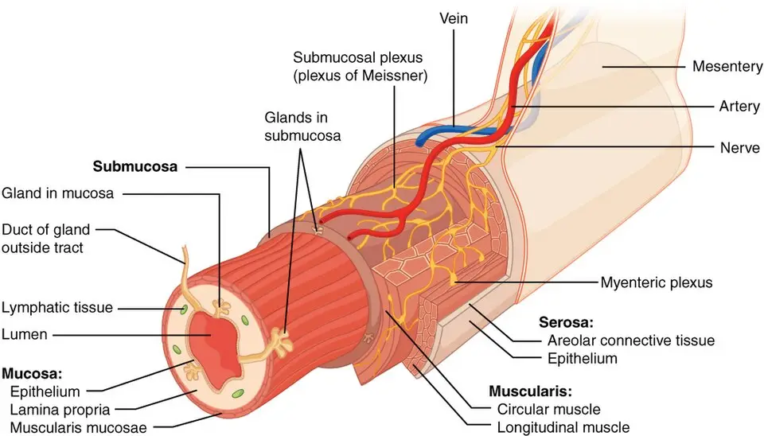
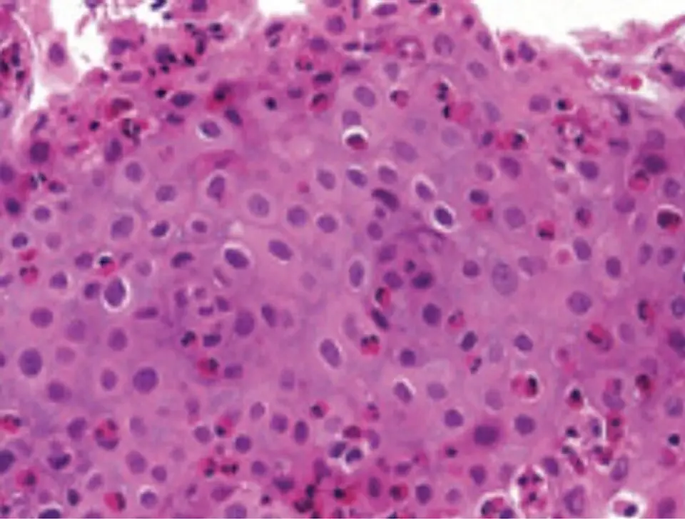

DX.5 — Œsophagite à éosinophiles
Un adulte jeune qui mâche longtemps, boit pour faire passer la viande et a déjà eu un bol bloqué porte souvent une œsophagite à éosinophilesS5S6. Le diagnostic repose sur au moins six biopsies étagées, même si l'œsophage paraît normalS5S8. Chaque année de retard augmente le risque de sténose fibreuse, ce qui impose de traiter tôt et durablementS2.
1. Définition
Les recommandations européennes de 2017 définissent l'œsophagite à éosinophiles (OeE) comme une maladie œsophagienne chronique, locale et à médiation immunitaireS5. Cliniquement, elle provoque des symptômes de dysfonction œsophagienne ; histologiquement, elle se caractérise par une inflammation à prédominance éosinophile de l'épithéliumS5. La Société britannique de gastroentérologie fixe en 2022 le seuil histologique à un pic d'au moins 15 éosinophiles par champ à fort grossissementS6. Cette définition exige aussi l'absence d'une autre cause d'éosinophilie œsophagienneS6.
2. Épidémiologie (Suisse, puis Europe)
Dans le canton de Vaud, l'incidence est passée de 0,16 à 6,3 cas pour 100 000 habitants entre 2004 et 2013S1. La prévalence cumulée y atteignait 24,1 pour 100 000 habitants en 2013, et l'incidence masculine dépassait de 2,8 fois l'incidence féminineS1. En Europe et en Amérique du Nord, la prévalence groupée de la méta-analyse de 29 études est de 34,4 pour 100 000 habitantsS4. Les groupes touchés, l'évolution non traitée et le poids pour le patient expliquent pourquoi ce diagnostic se cherche dès la première dysphagie aux solides.
Qui est touché : Suisse, puis Europe
Les deux études vaudoise et bernoise reposent sur des registres de pathologie et des cohortes suisses, tandis que la méta-analyse européenne agrège des données de populationS1S3S4.
| Donnée | Valeur | Population, année | Source |
|---|---|---|---|
| Incidence annuelle | 0,16 puis 6,3 pour 100 000 habitants | Canton de Vaud, 2004 puis 2013 | Giriens 2015 [S1] |
| Prévalence cumulée | 24,1 pour 100 000 habitants | Canton de Vaud, 2013 (743 317 habitants) | Giriens 2015 [S1] |
| Rapport d'incidence hommes/femmes | 2,8 | Canton de Vaud, 1993-2013 | Giriens 2015 [S1] |
| Hommes dans la cohorte | 77 % ; âge médian au diagnostic de 35,8 ans | Cohorte suisse, 266 adultes | Schreiner 2022 [S3] |
| Prévalence groupée | 34,4 pour 100 000 ; adultes 42,2 ; enfants 34 | 29 études de population, jusqu'en 2018 | Navarro 2019 [S4] |
| Incidence groupée | 7,7 pour 100 000 années-personnes chez l'adulte ; 6,6 chez l'enfant | Même méta-analyse | Navarro 2019 [S4] |
| Part des dysphagies explorées | Jusqu'à 23 % des endoscopies pour dysphagie | Adultes européens | Eureos 2017 [S5] |
| Part des impactions alimentaires | 46 % des patients biopsiés après impaction | Série britannique de 546 patients | BSG (British Society of Gastroenterology) 2022 [S6] |
Le sexe masculin multiplie le risque par deux à trois, et une atopie personnelle précède le diagnostic chez 50 à 60 % des patientsS5. La rhinite allergique, l'asthme et l'eczéma sont plus fréquents que dans la population générale, et les symptômes varient souvent avec la saison polliniqueS5S6. L'incidence vaudoise de 2010 à 2013 dépassait de 10,6 fois celle de 1993 à 2009, et aucun cas n'y était diagnostiqué avant 2003S1.
Évolution non traitée et retard diagnostique
Dans la base suisse de 200 patients, le délai médian entre premiers symptômes et diagnostic atteignait 6 ans, avec un intervalle interquartile de 2 à 12 ansS2. La prévalence des sténoses passait de 17,2 % pour un retard de 0 à 2 ans à 70,8 % au-delà de 20 ansS2. Les signes fibreux endoscopiques progressaient parallèlement de 46,5 % à 87,5 %S2. Chaque année de retard augmentait le risque de sténose d'un rapport de cotes de 1,08, seul facteur de risque retenu par l'analyseS2.
Dans le canton de Vaud, le retard médian restait de 4 ans en 2015, ce qui montre que la maladie reste longtemps méconnueS1. Dans la cohorte suisse, les hommes attendaient 62 mois contre 36 mois pour les femmes et présentaient davantage de microabcès et de fibroseS3. L'OeE non traitée entretient symptômes et inflammation, puis remodèle la paroi jusqu'à la sténose et aux troubles fonctionnelsS5.
Poids pour le patient et enjeux de santé publique
Les patients adaptent leurs repas, évitent les solides et mangent lentement, ce qui masque le symptôme et retarde la consultationS5. Les restrictions alimentaires et la peur de s'étouffer gênent la vie sociale, d'où la mesure systématique de la qualité de vieS5S7. L'OeE constitue la première cause d'impaction alimentaire vue aux urgences britanniques, et l'impaction révèle la maladie chez 30 % des patientsS6. Une maladie chronique du sujet jeune, traitée au long cours, représente donc une charge pour les urgences, l'endoscopie et les budgets de médicamentsS6S13.
3. Physiopathologie
L'œsophage normal transporte le bol par une paroi souple, dont l'épithélium malpighien forme une barrière ; la base à connaître montre ses couches sur un schéma publiéS11. Dans l'OeE, une barrière épithéliale altérée laisse passer les antigènes alimentaires et aériens, qui déclenchent une inflammation allergique de type 2S5S14. Les éosinophiles s'accumulent dans l'épithélium, puis la fibrose de la sous-muqueuse rigidifie la paroiS5S6. La chaîne en quatre temps et la corrélation avec les examens et les traitements relient chaque étape à son geste.
Base à connaître — paroi œsophagienne et barrière épithéliale
L'œsophage est un tube musculaire d'environ 25,4 cm, situé derrière la trachée, qui relie le pharynx à l'estomacS11. Sa paroi suit le plan commun du tube digestif, qui superpose muqueuse, sous-muqueuse, musculeuse et tunique externeS11. La muqueuse œsophagienne porte un épithélium pavimenteux stratifié non kératinisé, qui protège la paroi contre l'érosion par les particules alimentairesS11. La musculeuse est striée au tiers supérieur, mixte au tiers moyen et lisse au tiers inférieurS11. L'épithélium malpighien normal ne contient pratiquement pas d'éosinophiles, alors que le reflux en amène en général moins de cinq par champS5. Cette différence explique pourquoi le comptage dans l'épithélium suffit à séparer l'OeE du reflux dans la plupart des biopsiesS5S6.
Le bol solide progresse grâce à une onde péristaltique qui exige une paroi distensible ; une dysphagie limitée aux solides évoque donc un obstacle mécaniqueS8. Une dysphagie aux solides et aux liquides oriente plutôt vers un trouble moteur, comme l'achalasieS8. Dans l'OeE, les anneaux et la fibrose réduisent à la fois le calibre et la distensibilité, d'où le blocage des morceaux de viande ou de painS5S6.
Couches de la paroi digestive : ce schéma en couleur d'OpenStax montre en perspective les couches du tube digestif, de la lumière jusqu'à la tunique externeS11.

Le schéma brut montre les couches avec leurs légendes anglaises : le lecteur y situe d'abord l'épithélium.
La copie annotée, œuvre dérivée sous la même licence, porte cinq repères que la lecture guidée commente.
- Le repère un montre l'épithélium de la muqueuse, couche où le pathologiste compte les éosinophiles de l'OeES11S5.
- Le repère deux montre le chorion et la musculaire muqueuse, que la biopsie standard n'atteint souvent qu'en partieS11S6.
- Le repère trois montre la sous-muqueuse et ses glandes, où la fibrose de l'OeE rigidifie la paroiS11S5.
- Le repère quatre montre la musculeuse circulaire et longitudinale, dont les contractions coordonnées propulsent le bol vers l'estomacS11.
- Le repère cinq désigne le plexus myentérique, qui commande le péristaltisme et dont l'atteinte relève de l'achalasie, non de l'OeES11S8.
Cette figure est attribuée à OpenStax College, Anatomy and Physiology, et elle est publiée sous licence CC BY 3.0 sur Wikimedia Commons, consultée le 12.11.2026S11.
Chaîne en quatre temps
| Temps | Niveau | Événement | Traduction clinique |
|---|---|---|---|
| Amorce | Moléculaire | La barrière épithéliale altérée laisse pénétrer les allergènes ; des variants génétiques, dont ceux de la TSLP (thymic stromal lymphopoietin, lymphopoïétine stromale thymique), modulent la susceptibilité [S5] | Le terrain atopique et masculin prédispose |
| Développement | Cellulaire | Les cytokines de type 2, interleukine 4 et interleukine 13, entretiennent l'inflammation liée aux éosinophiles [S14] | Les éosinophiles envahissent l'épithélium |
| Installation | Tissulaire | Hyperplasie basale, œdème intercellulaire, microabcès et sclérose sous-épithéliale apparaissent [S6] | Exsudats, sillons et œdème deviennent visibles |
| Maintien | Clinique | La fibrose crée anneaux et sténoses, qui progressent avec la durée sans traitement [S2] | Le bol se bloque et l'impaction survient |
L'OeE n'est pas principalement médiée par les immunoglobulines E, ce qui explique l'échec des tests allergologiques à désigner les aliments en causeS5. Un anticorps anti-immunoglobulines E est d'ailleurs resté sans bénéfice dans un essai contre placeboS6.
Corrélation : perturbation, exploration, thérapeutique
| Perturbation | Exploration qui la montre | Thérapeutique qui la corrige |
|---|---|---|
| Inflammation éosinophile épithéliale | Biopsies étagées avec comptage du pic par champ [S5] | Corticoïde topique avalé, qui freine l'inflammation au contact de la muqueuse [S13] |
| Voie de l'interleukine 4 et de l'interleukine 13 | Expression génique des biopsies, en recherche [S14] | Dupilumab, qui bloque le récepteur commun de ces deux cytokines [S14] |
| Antigène alimentaire déclenchant | Endoscopie après éviction puis réintroduction [S6] | Régime d'éviction empirique par étapes [S6] |
| Composante sensible à l'acide | Biopsies après 8 à 12 semaines d'IPP (inhibiteurs de la pompe à protons) [S6] | Inhibiteur de la pompe à protons à double dose [S5] |
| Fibrose et réduction du calibre | Endoscopie, transit baryté [S6] | Dilatation endoscopique, associée au traitement anti-inflammatoire [S5] |
4. Démarche diagnostique
Le médecin traite d'abord l'urgence : un bol bloqué qui empêche d'avaler la salive relève de l'impaction alimentaire œsophagienne (DX.3, 🚩 E2) et de l'endoscopie urgenteS6. Une douleur thoracique avec fièvre ou emphysème après vomissement fait rechercher une perforation, avant toute autre questionS6. Il écarte ensuite le cancer chez le sujet âgé dont la dysphagie progresse viteS8. Le tableau des discriminants distingue enfin l'OeE de la sténose peptique, du reflux et de l'achalasie.
Diagnostics discriminants : les graves d'abord
| Diagnostic | Élément qui tranche | Piège | Conduite si positif |
|---|---|---|---|
| Impaction alimentaire 🚩 E2 (DX.3) | Salive non avalée, hypersialorrhée, bol bloqué [S6] | Attendre la résolution spontanée sans biopsier ensuite [S6] | Endoscopie urgente, puis biopsies étagées au même geste [S6] |
| Perforation œsophagienne | Douleur thoracique, fièvre, emphysème après bolus ou vomissement [S6] | La confondre avec une simple douleur d'impaction [S6] | Imagerie et avis chirurgical immédiats [S6] |
| Cancer de l'œsophage (DX.6) | Dysphagie rapidement progressive, sujet âgé, amaigrissement [S8] | Attribuer la dysphagie à une OeE connue sans réexplorer [S6] | Endoscopie avec biopsies de la lésion [S8] |
| Sténose peptique (DX.4) | Longue histoire de reflux, sténose distale courte [S8] | Ignorer qu'une OeE peut causer une sténose non néoplasique [S8] | Biopsies étagées au-dessus de la sténose [S5] |
| Reflux gastro-œsophagien | Éosinophiles en général moins de cinq par champ [S5] | Croire que les deux maladies s'excluent [S6] | Traiter le reflux, et recompter après traitement si le doute persiste [S6] |
| Achalasie (DX.7) | Dysphagie aux solides et aux liquides, régurgitations [S8] | Arrêter l'enquête après une endoscopie normale [S6] | Manométrie haute résolution [S8] |
5. Anamnèse ciblée et drapeaux rouges
L'interrogatoire caractérise la dysphagie et recherche les épisodes d'impaction, car ils signent l'obstacle mécanique intermittent typique de l'adulteS5S6. Il demande ensuite les stratégies d'adaptation aux repas, puis la douleur thoracique et le pyrosisS5. Chez l'enfant, les symptômes changent avec l'âge, et le terrain précise atopie et médicamentsS6. Les drapeaux rouges imposent chacun une action immédiate.
Dysphagie
| Caractère | Forme typique de l'OeE | Raison |
|---|---|---|
| Siège | Rétrosternal, parfois mal localisé vers le cou | La gêne naît dans l'œsophage, sous la jonction pharyngée [S8] |
| Aliments | Solides, surtout viande, pain et riz | L'obstacle mécanique arrête les solides et laisse passer les liquides [S8] |
| Horaire et rythme | Intermittente, sur des années | Le calibre varie avec l'inflammation et la saison pollinique [S6] |
| Facteur calmant | Boire, régurgiter ou attendre | Le liquide ramollit et pousse le bol [S5] |
| Signes associés | Douleur thoracique, pyrosis, impactions répétées | L'inflammation et le spasme accompagnent l'obstacle [S5] |
Cette dysphagie est typique lorsqu'elle touche un adulte jeune, de façon intermittente et sans amaigrissementS5S6. Elle devient atypique lorsqu'elle progresse en quelques mois ou touche aussi les liquides, ce qui fait d'abord chercher un cancer ou un trouble moteurS8.
Impaction alimentaire
Le patient décrit un morceau qui s'arrête derrière le sternum, souvent de la viande, avec impossibilité d'avaler et régurgitation de saliveS6. L'impaction révèle la maladie chez 30 % des patients, et la plupart surviennent chez des patients encore non diagnostiquésS6. Chez l'adulte, elle fait partie des présentations initiales dans 33 à 54 % des cas selon les sériesS5. Le médecin demande donc toujours si un épisode antérieur a cédé spontanément, car cette notion manque souvent au dossierS6.
Stratégies d'adaptation aux repas
Les patients évitent les solides, prolongent la durée des repas et mâchent excessivement, ce qui masque la dysphagie et fausse l'évaluation des symptômesS5. Le médecin demande s'il faut boire après chaque bouchée, couper très finement, manger le dernier ou renoncer au restaurantS5. Une réponse positive rend la plainte typique, même si le patient affirme « avaler normalement »S5.
Douleur thoracique et pyrosis
Une brûlure rétrosternale résistante aux IPP doit faire penser à l'OeE, car l'inflammation éosinophile provoque des symptômes proches du refluxS6. L'OeE et le reflux peuvent coexister dans le même patient, si bien que la réponse aux IPP ne tranche pas entre euxS6. Une douleur thoracique intense après un bol bloqué ou un vomissement reste atypique et fait rechercher une perforationS6.
Symptômes de l'enfant selon l'âge
Dans une série de 620 enfants, les moins de 6 ans présentaient surtout des difficultés alimentaires, un retard de croissance et des vomissementsS6. Les plus de 6 ans se plaignaient plutôt de douleurs abdominales, puis de dysphagie et d'impaction vers un âge médian de 11,1 ansS6. Le refus alimentaire du nourrisson fait donc partie des présentations de l'OeE, bien qu'il paraisse sans lien avec l'œsophageS5.
Terrain : atopie, médicaments et immunothérapie
L'anamnèse recherche asthme, rhinite, eczéma et allergie alimentaire, car ces maladies sont nettement plus fréquentes chez les patients atteints d'OeES5. Elle note tout IPP et tout corticoïde récent, car ces traitements peuvent abaisser le comptage d'éosinophiles et masquer la maladieS6. Swissmedic signale une OeE possible sous immunothérapie orale à l'arachide chez les enfants de 4 à 17 ans traités par PalforziaS9. Des symptômes digestifs sévères ou persistants imposent alors d'arrêter ce produit et de pratiquer une œsogastroscopieS9.
Drapeaux rouges et action immédiate
| Drapeau rouge | Signification | Action immédiate |
|---|---|---|
| Salive impossible à avaler | Obstruction œsophagienne complète [S6] | Endoscopie en urgence, selon la conduite du DX.3 [S6] |
| Stridor, toux à chaque gorgée, détresse respiratoire | Atteinte des voies aériennes ou fausse route | Appel du 144 et gestes du DX.10 [S6] |
| Douleur thoracique, fièvre, crépitation cervicale | Perforation œsophagienne [S6] | Jeûne, imagerie, avis chirurgical [S6] |
| Dysphagie rapidement progressive, amaigrissement | Cancer possible [S8] | Endoscopie rapide avec biopsies (DX.6) [S8] |
| Cassure de la courbe de croissance | Apports insuffisants chez l'enfant [S6] | Avis gastropédiatrique et diététique rapide [S7] |
6. Examen physique ciblé, région par région
L'examen physique de l'OeE est le plus souvent normal, ce qui ne permet ni de l'exclure ni de la confirmerS5. Il recherche pourtant les complications et les maladies associées, dans l'ordre suivant : état général et poids, bouche et oropharynx, cou, thorax et respiration, puis peauS5S6. Chez l'enfant, l'examen comprend aussi la croissance.
Région 1 — État général et poids
Signe. Le médecin cherche une perte de poids, une déshydratation ou une dénutrition, car les restrictions alimentaires peuvent réduire les apportsS5. Geste. Il pèse le patient, compare au poids habituel et calcule l'indice de masse corporelleS5. Interprétation. Un amaigrissement marqué reste inhabituel dans l'OeE et oriente d'abord vers une cause néoplasiqueS8.
Région 2 — Bouche et oropharynx
Signe. Le médecin recherche des plaques blanchâtres décollables de candidose, surtout chez un patient traité par corticoïde topique avaléS13. Geste. Il examine langue, palais et piliers à l'abaisse-langue et à la lampeS13. Interprétation. Une candidose buccale symptomatique se traite par antifongique, tout en poursuivant le budésonide selon l'AIPS (information professionnelle suisse)S13.
Région 3 — Cou
Signe. Le médecin palpe une crépitation sous-cutanée, car l'emphysème cervical trahit une perforation après impactionS6. Geste. Il palpe doucement les creux sus-claviculaires et la région cervicale antérieure, à la recherche d'une crépitation neigeuseS6. Interprétation. Une crépitation impose le jeûne et une imagerie urgente, car les déchirures de l'OeE restent souvent limitées mais réellesS6.
Région 4 — Thorax et respiration
Signe. Le médecin recherche un sifflement expiratoire, signe d'un asthme associé, et une toux ou un stridor pendant la déglutitionS5. Geste. Il ausculte les deux champs pulmonaires en respiration lente puis forcée, et observe le patient boire une gorgée d'eauS8. Interprétation. Une toux à la gorgée évoque une dysphagie oropharyngée, qui oriente vers les DX.1 et DX.2 plutôt que vers l'OeES8.
Région 5 — Peau
Signe. Le médecin cherche un eczéma atopique des plis, car l'eczéma est plus fréquent chez les patients atteints d'OeES5. Geste. Il inspecte les plis des coudes, des genoux et le cou, puis interroge sur le pruritS5. Interprétation. L'eczéma augmente la probabilité clinique, mais son absence n'exclut pas la maladieS5.
Région 6 — Croissance de l'enfant
Signe. Le médecin recherche une cassure de la courbe de poids ou de taille, car le retard de croissance révèle l'OeE chez le jeune enfantS6. Geste. Il reporte poids et taille sur les courbes et compare aux mesures antérieuresS7. Interprétation. Une cassure impose un avis gastropédiatrique et un suivi diététique dans le plan de traitementS6S7.
7. Approche syndromique
L'OeE se présente selon trois syndromes, que le tableau des syndromes éclate en signes fonctionnels et physiquesS5S6. Le premier est la dysphagie œsophagienne mécanique intermittente de l'adulte, le deuxième l'obstruction aiguë par le bol, le troisième la forme pédiatrique digestive. Les définitions des signes précisent le geste de recherche et le mécanisme de chacun.
Syndromes 7.1 à 7.3
| Syndrome | Signes fonctionnels | Signes physiques |
|---|---|---|
| 7.1 Dysphagie mécanique intermittente | Blocage des solides, mastication prolongée, boisson pour faire passer [S5] | Examen souvent normal [S5] |
| 7.2 Obstruction aiguë | Bol bloqué, salive régurgitée, douleur rétrosternale [S6] | Hypersialorrhée, crachats de salive ; crépitation si perforation [S6] |
| 7.3 Forme pédiatrique digestive | Refus alimentaire, vomissements, douleurs abdominales [S6] | Cassure de la courbe de croissance [S6] |
Définitions des signes et mécanismes
| Signe | Définition | Geste de recherche | Mécanisme |
|---|---|---|---|
| Dysphagie œsophagienne | Difficulté à avaler ressentie derrière le sternum [S8] | Question ouverte, puis aliments en cause | Calibre réduit et paroi moins distensible [S5] |
| Hypersialorrhée | Salive qui s'accumule et s'écoule | Observation du patient qui crache | Le bol bloque toute progression, y compris celle de la salive [S6] |
| Odynophagie | Déglutition douloureuse | Question ciblée pendant le repas | Inflammation muqueuse ou candidose sous corticoïde [S13] |
| Retard de croissance | Cassure de la courbe staturo-pondérale | Report sur les courbes de croissance | Apports réduits par le refus alimentaire [S6] |
8. Diagnostic positif et critères
Le diagnostic repose sur trois éléments réunis : des symptômes de dysfonction œsophagienne, un pic d'au moins 15 éosinophiles par champ, et l'exclusion d'une autre cause d'éosinophilieS5S6. Ce seuil de 15 éosinophiles par champ offre une sensibilité de 100 % et une spécificité de 96 % selon les recommandations européennesS5. Le tableau des critères distingue ce qui suffit de ce qui ne suffit pas.
Critères diagnostiques
| Critère | Seuil ou exigence | Source |
|---|---|---|
| Symptômes | Dysphagie ou impaction chez l'adulte ; difficultés alimentaires, douleurs ou vomissements chez l'enfant | BSG 2022 [S6] |
| Histologie | Pic d'au moins 15 éosinophiles par champ à fort grossissement, soit environ 0,3 mm², ou plus de 60 par mm² | Eureos 2017, BSG 2022 [S5][S6] |
| Signes histologiques associés | Hyperplasie basale, spongiose, microabcès, dégranulation, sclérose sous-épithéliale | BSG 2022 [S6] |
| Exclusion | Autres causes d'éosinophilie œsophagienne écartées | Eureos 2017 [S5] |
| Ce qui ne suffit pas | Aspect endoscopique seul, éosinophilie sanguine, tests allergologiques | Eureos 2017 [S5] |
| Ce qui n'exclut pas | Réponse clinique et histologique à un IPP | BSG 2022 [S6] |
L'endoscopie seule n'établit jamais le diagnostic, et un œsophage d'aspect normal est rapporté chez 10 % des adultes et 32 % des enfants atteintsS5. Une OeE qui répond aux IPP reste une OeE, et l'échec préalable d'un IPP n'est plus une condition du diagnosticS6.
9. Examens complémentaires
9.a — Examen de référence : l'œsogastroduodénoscopie avec biopsies étagées confirme le diagnostic, car seule l'histologie compte les éosinophilesS5S8.
9.b — Première intention : cette endoscopie constitue aussi le premier examen de toute dysphagie œsophagienne, selon la recommandation européenne de 2025S8.
9.c — Alternatives : chez l'enfant, toute endoscopie digestive haute pour symptômes comporte des biopsies œsophagiennes, car l'imagerie ne remplace jamais l'histologieS6.
9.d — Seconde intention : la biologie sanguine, les tests allergologiques, le transit baryté et la manométrie répondent à des questions précises ; le contrôle après traitement clôt l'évaluation.
Œsogastroduodénoscopie : signes, score et pièges
Le score endoscopique de référence EREFS (Eosinophilic Esophagitis Endoscopic Reference Score) comprend cinq signes : exsudats, anneaux, œdème, sillons longitudinaux et sténoseS5. L'œdème se traduit par une perte du réseau vasculaire, et les anneaux par un aspect de « trachéalisation » de l'œsophageS5.
| Signe EREFS | Aspect | Signification | Conduite |
|---|---|---|---|
| Exsudats | Points ou plaques blanchâtres | Inflammation active, microabcès [S6] | Biopsier les zones atteintes [S5] |
| Anneaux | Cercles fixes, aspect trachéal | Remodelage fibreux [S5] | Mesurer le calibre ; discuter la dilatation [S5] |
| Œdème | Perte du réseau vasculaire | Inflammation active [S5] | Biopsier [S5] |
| Sillons | Lignes longitudinales | Inflammation active [S5] | Biopsier [S5] |
| Sténose | Rétrécissement que l'endoscope franchit mal | Fibrose installée [S2] | Dilatation et traitement anti-inflammatoire [S5] |
Le score EREFS identifie la plupart des patients, mais son aire sous la courbe varie de 0,79 à 0,88 pour juger la réponse histologiqueS8. Une OeE a été retrouvée dans 10 % des endoscopies normales et dans 50 % des sténoses non néoplasiquesS8. Le piège consiste donc à conclure sur l'aspect, alors que la biopsie reste nécessaire même si la muqueuse paraît saineS8.
Biopsies et histologie : prescription, lecture et pièges
Prescription. L'endoscopiste doit prélever au moins six biopsies sur au moins deux niveaux, proximal ou moyen et distal, en ciblant les zones anormalesS8. Il ajoute des biopsies gastriques et duodénales au premier examen, afin de rechercher une gastroentérite à éosinophilesS5. Pour un diagnostic programmé, les IPP s'arrêtent au moins trois semaines avant l'endoscopie, sans jamais retarder une endoscopie urgenteS6.
Lecture. Le pathologiste rapporte le pic d'éosinophiles par champ et, de préférence, par millimètre carré, car la surface du champ varie d'un microscope à l'autreS5. Le reflux s'accompagne en général de moins de cinq éosinophiles par champ, alors que l'OeE en compte au moins quinzeS5.
Biopsie œsophagienne d'OeE : coupe colorée à l'hématoxyline-éosine, grossissement original de 200 fois, où les auteurs ont compté 58 éosinophiles intraépithéliauxS12.

La micrographie brute montre l'épithélium : le lecteur y cherche d'abord les cellules à cytoplasme rouge vif.
La copie annotée, œuvre dérivée sous la même licence, porte quatre repères commentés ci-dessous.
- Le repère un montre un éosinophile intraépithélial, reconnaissable à son cytoplasme granuleux rouge et à son noyau sombre, absent de l'épithélium normalS12S5.
- Le repère deux montre une accumulation superficielle d'éosinophiles, aspect qui évoque un microabcès éosinophileS6.
- Le repère trois montre un halo clair autour des cellules, qui traduit l'œdème intercellulaire ou spongioseS12S6.
- Le repère quatre montre des kératinocytes aux noyaux rapprochés, que le pathologiste confronte à l'hyperplasie basale décrite dans l'OeES6.
Cette micrographie est attribuée à Shereen Shoukry Hunter et à ses coauteurs, et elle est publiée sous licence CC BY 4.0 sur Wikimedia Commons, consultée le 12.11.2026S12.
Alternatives selon le terrain
| Terrain | Adaptation | Raison |
|---|---|---|
| Enfant | Biopsies œsophagiennes systématiques lors de toute endoscopie digestive haute pour symptômes | Les symptômes de l'enfant sont peu spécifiques [S6][S7] |
| Endoscopie impossible | Transit baryté pour juger le calibre, sans valeur diagnostique pour l'inflammation | Seule l'histologie compte les éosinophiles [S5] |
Biologie sanguine : utile ou non
Le compte absolu d'éosinophiles sanguins corrèle le mieux avec l'activité, mais sa précision diagnostique n'atteint que 0,754S5. Les immunoglobulines E totales et la protéine cationique éosinophile ne permettent ni de diagnostiquer ni de suivre la maladieS5. La formule sanguine sert donc surtout à repérer une hyperéosinophilie systémique, qui ferait chercher une autre maladieS5.
| Anomalie | À rechercher à l'anamnèse | À la clinique | Examen de référence | Diagnostic |
|---|---|---|---|---|
| Éosinophilie sanguine modérée | Atopie, rhinite saisonnière | Eczéma, sibilances | Biopsies œsophagiennes | OeE avec terrain atopique |
| Éosinophilie sanguine marquée | Diarrhée, douleurs abdominales, médicaments | Atteinte cutanée ou pulmonaire | Biopsies gastriques et duodénales | Gastroentérite à éosinophiles ou syndrome systémique |
| Hypoalbuminémie, ferritine basse | Restriction alimentaire, amaigrissement | Dénutrition | Endoscopie avec biopsies | Cancer ou maladie digestive associée à exclure |
Tests allergologiques : limites
Les recommandations britanniques déconseillent les prick-tests, les immunoglobulines E spécifiques et les patch-tests pour choisir les aliments à exclureS6. Un régime guidé par ces tests n'obtient une rémission histologique que chez moins d'un tiers des adultesS5. Ces tests gardent leur place pour une allergie alimentaire immédiate associée, que l'allergologue traite séparémentS6.
Transit baryté
Le transit baryté mesure le calibre et la longueur d'un rétrécissement, ce que l'endoscopie apprécie mal lorsque la fibrose est étendueS6. Il s'indique devant une dysphagie persistante malgré une endoscopie peu contributive, notamment pour planifier une dilatationS6. Une sténose discrète au-delà de 10 mm de diamètre peut échapper à l'endoscopie, ce que l'imagerie aide à révélerS8.
Manométrie haute résolution
La manométrie haute résolution est l'examen de référence de la motricité œsophagienneS8. Elle s'indique lorsque la dysphagie persiste sous traitement avec une endoscopie normale, afin d'écarter une achalasie ou un autre trouble moteurS6. Un trouble moteur peut coexister avec l'OeE, ce qui explique certaines dysphagies résistantes malgré une rémission histologiqueS6.
Contrôle après traitement
Une endoscopie de contrôle avec biopsies se pratique 8 à 12 semaines après le début de tout traitement, car les symptômes reflètent mal l'inflammationS6. Une récidive des symptômes sous traitement impose une nouvelle endoscopie, pour recompter les éosinophiles et rechercher une sténose ou une candidoseS6.
10. Arbre décisionnel
- Si le patient ne peut plus avaler sa salive, alors le médecin l'adresse pour une endoscopie urgente et fait biopsier l'œsophage pendant le même gesteS6.
- Si une douleur thoracique, une fièvre ou une crépitation suit l'impaction, alors il suspecte une perforation et demande imagerie et avis chirurgicalS6.
- Si la dysphagie progresse vite chez un sujet âgé qui maigrit, alors l'endoscopie rapide recherche d'abord un cancerS8.
- Si un adulte décrit une dysphagie intermittente aux solides ou des impactions, alors il prescrit une endoscopie avec au moins six biopsies sur deux niveauxS8.
- Si le pic atteint au moins quinze éosinophiles par champ sans autre cause, alors il retient l'OeE et choisit un traitement avec le patientS6.
- Si une sténose gêne l'alimentation, alors il ajoute une dilatation endoscopique au traitement anti-inflammatoireS5S6.
- Si les biopsies de contrôle restent au-dessus du seuil après 8 à 12 semaines, alors il change de traitement ou adresse en centre spécialiséS6.
- Si les traitements conventionnels échouent, sont contre-indiqués ou mal tolérés, alors le dupilumab devient une option admise par l'AIPS dès un anS14.
11. Prise en charge selon les recommandations suisses
11.A — But : le traitement vise une rémission clinique et histologique, sous le seuil de quinze éosinophiles par champ, afin de prévenir sténoses et impactionsS6. Le diagnostic et le traitement précoces peuvent prévenir la fibrose et les sténoses qui exigeraient plus tard une dilatationS6.
11.B — Moyens : l'impaction et la perforation suivent la fenêtre Urgence — conduite chronologique, puis le traitement de fond suit un ordre précisS6. Les médicaments relèvent de l'AIPS suisse, tandis que le régime d'éviction et la dilatation complètent l'arsenalS5S6. Les situations particulières et le volet social et assurance adaptent la conduite au patient.
11.C — Surveillance : le médecin surveille symptômes, histologie, effets indésirables et nutrition, avec une endoscopie de contrôle après chaque changement de traitementS6.
11.D — Pronostic : l'évolution est chronique et récidivante à l'arrêt du traitement, ce qui impose un entretien prolongéS5. Les critères de rémission et de sortie se vérifient un par un avant de confier le suivi au médecin de famille.
Urgence — conduite chronologique
| Délai | Impaction alimentaire | Perforation suspectée |
|---|---|---|
| Minutes | Évaluer la salive et la respiration, puis suivre la conduite du DX.3 | Jeûne strict et appel immédiat du chirurgien [S6] |
| Heures | Endoscopie urgente pour extraire le bol, selon les délais du DX.3 [S6] | Imagerie thoracique et décision chirurgicale ou conservatrice selon l'étendue [S6] |
| Même geste | Six biopsies sur deux niveaux, même si la muqueuse paraît normale [S6] | Bilan de l'étendue de la déchirure, souvent petite et multiple dans l'OeE [S6] |
| Jours | Rendez-vous pour le résultat histologique et le traitement de fond [S6] | Traitement de fond de l'OeE une fois la déchirure contrôlée [S6] |
Dans l'OeE, la perforation survient le plus souvent pendant l'impaction et consiste en déchirures petites et multiples, avec une extravasation limitéeS6. Elle diffère du syndrome de Boerhaave, déchirure transmurale du tiers inférieur dont la mortalité dépasse 50 %S6. Le piège qui fait perdre du temps consiste à renvoyer le patient après désobstruction spontanée, sans biopsie ni rendez-vousS6.
Ordre du traitement de fond
- Le médecin explique la maladie chronique et choisit avec le patient l'une des trois options de première ligne : IPP, corticoïde topique ou régimeS5S6.
- Chez l'adulte, les recommandations britanniques préfèrent le budésonide orodispersible aux autres corticoïdes avalés, grâce à son autorisation européenneS6.
- Il contrôle la réponse par endoscopie et biopsies après 8 à 12 semaines, puis poursuit un traitement d'entretien adapté à la réponseS6.
- Il ajoute une dilatation lorsque la sténose limite l'alimentation, même avant l'effet du traitement anti-inflammatoireS6.
- En cas d'échec, d'intolérance ou de contre-indication aux traitements conventionnels, il discute le dupilumab en centre spécialiséS14.
Les corticoïdes systémiques ne sont pas recommandés dans l'OeE, pas plus que le cromoglicate, le montélukast ou les antihistaminiquesS6. Les recommandations pédiatriques européennes admettent toutefois un corticoïde systémique avant la dilatation d'une sténose de l'enfantS7.
Médicaments : spécialité, dose et place
| Molécule ® | Dose | Voie, durée | Contre-indication majeure | Fiche |
|---|---|---|---|---|
| Budésonide, Jorveza® (n° 66999) | Induction : 1 mg matin et soir S13 | Orodispersible, 6 à 12 semaines, puis entretien | Hypersensibilité ; insuffisance hépatique | Fiche |
| Oméprazole, Omeprazol-Mepha® (n° 62875) | Hors AIPS : 20 à 40 mg deux fois par jour chez l'adulte selon Eureos S5 | Orale, 8 à 12 semaines avant contrôle | Hypersensibilité aux benzimidazoles | Fiche |
| Dupilumab, Dupixent® (n° 66649) | 40 kg ou plus : 300 mg une fois par semaine S14 | Sous-cutanée, au long cours | Hypersensibilité | Fiche |
Budésonide — Jorveza® comprimés orodispersibles (n° 66999)
| Classe | Glucocorticoïde à action locale, à fort effet de premier passage hépatique par le cytochrome CYP3A4 (isoforme 3A4 du cytochrome) [S13] |
|---|---|
| Indication | Traitement de l'OeE chez l'adulte [S13] |
| Dose AIPS | Induction : 1 mg le matin et 1 mg le soir, soit 2 mg par jour pendant 6 semaines, prolongeables jusqu'à 12 semaines ; entretien : 0,5 mg ou 1 mg deux fois par jour S13 |
| Administration | Après un repas, sur le bout de la langue contre le palais, salive avalée peu à peu ; rien à boire ni à manger pendant 30 minutes [S13] |
| Contre-indications | Hypersensibilité au principe actif ou aux excipients ; à ne pas utiliser en cas de trouble de la fonction hépatique ; non recommandé en cas d'insuffisance rénale sévère [S13] |
| Grossesse et allaitement | Grossesse : à éviter sauf arguments solides ; allaitement : interrompre l'allaitement ou le traitement selon le bénéfice [S13] |
| Interactions | Kétoconazole, ritonavir, itraconazole, clarithromycine, cobicistat et jus de pamplemousse augmentent fortement l'exposition [S13] |
| Effets indésirables | Candidose buccale, pharyngée ou œsophagienne ; baisse du cortisol sanguin [S13] |
Dans l'essai de phase III, 34 patients sur 59 traités atteignaient une rémission clinico-pathologique à 6 semaines, contre aucun des 29 patients sous placeboS13. En entretien, 73,5 % sous 0,5 mg deux fois par jour et 75,0 % sous 1 mg deux fois par jour restaient sans échec à 48 semainesS13. La dose de 1 mg deux fois par jour est recommandée en entretien chez les patients malades depuis de nombreuses années ou à inflammation très étendueS13. Une candidose symptomatique est survenue chez 44 patients sur 268, et l'AIPS permet un antifongique sans arrêter le budésonideS13. L'AIPS n'établit ni sécurité ni efficacité avant 18 ans, si bien que l'usage pédiatrique relève de l'équipe spécialiséeS13.
Oméprazole — Omeprazol-Mepha® capsules gastrorésistantes (n° 62875)
| Classe | Inhibiteur de la pompe à protons ; ésoméprazole, pantoprazole et lansoprazole appartiennent à la même classe [S15] |
|---|---|
| Indication AIPS | Ulcères, œsophagite de reflux, reflux symptomatique et syndrome de Zollinger-Ellison ; l'OeE n'y figure pas [S15] |
| Dose dans l'OeE | Hors AIPS : 20 à 40 mg deux fois par jour chez l'adulte, 1 à 2 mg/kg chez l'enfant, selon Eureos 2017 S5 |
| Dose AIPS de référence | Œsophagite de reflux de l'adulte : 20 mg une fois par jour pendant 4 semaines, prolongeables de 4 semaines S15 |
| Contre-indications | Hypersensibilité à l'oméprazole, aux benzimidazoles substitués ou aux excipients ; association au clopidogrel déconseillée [S15] |
| Grossesse et allaitement | Grossesse : prudence faute d'études contrôlées ; allaitement : effet peu probable chez le nourrisson [S15] |
| Effets indésirables | Fractures et hypomagnésémie en usage prolongé à forte dose ; infections digestives [S15] |
Les IPP induisent une rémission histologique chez 50,5 % des patients selon la méta-analyse citée par les recommandations européennesS5. Les études utilisaient au minimum 40 mg d'oméprazole par jour, et l'oméprazole est le seul IPP évalué dans l'OeE selon la BSGS6 ; l'AIPS suisse ne retient pas cette indicationS15. La dose de l'OeE dépasse donc la dose AIPS du reflux, et la prescription le précise au patient comme usage hors information professionnelleS5S15.
Dupilumab — Dupixent® (n° 66649)
| Classe | Anticorps monoclonal humain de type IgG4 qui inhibe la signalisation de l'interleukine 4 et de l'interleukine 13 [S14] |
|---|---|
| Indication | OeE dès un an et 15 kg, en cas d'échec, de contre-indication ou d'intolérance aux traitements médicamenteux conventionnels [S14] |
| Dose AIPS | 15 à moins de 30 kg : 200 mg toutes les deux semaines ; 30 à moins de 40 kg : 300 mg toutes les deux semaines ; 40 kg ou plus : 300 mg une fois par semaine S14 |
| Voie et durée | Sous-cutanée, cuisse ou abdomen ; traitement au long cours, non étudié au-delà de 52 semaines dans l'OeE [S14] |
| Contre-indications | Hypersensibilité à la substance active ou aux excipients [S14] |
| Grossesse et allaitement | Grossesse : « Le dupilumab ne doit pas être utilisé pendant la grossesse, sauf si le bénéfice potentiel justifie le risque potentiel encouru par le fœtus. » ; allaitement : « Une décision doit être prise soit d'interrompre l'allaitement soit d'interrompre le traitement par dupilumab en prenant en compte le bénéfice de l'allaitement pour l'enfant au regard du bénéfice du traitement pour la mère. » [S14] |
| Mise en garde | Hyperéosinophilie systémique grave possible ; surveiller vascularite, symptômes pulmonaires et neuropathie [S14] |
Dans les études Treet, 59,5 % puis 58,8 % des patients sous dupilumab atteignaient au plus six éosinophiles par champ à 24 semaines, contre 5,1 % et 6,3 % sous placeboS14. Tous ces patients étaient réfractaires à au moins 8 semaines d'IPP à forte dose, ce qui fixe sa place après les traitements conventionnelsS14. Les infections touchaient 32,0 % des patients traités contre 24,8 % sous placebo à 24 semainesS14.
Régime d'éviction
Le régime d'éviction empirique de six groupes exclut lait, blé, œuf, soja, arachides et fruits à coque, poissons et fruits de merS6. Il induit une rémission histologique chez environ trois quarts des enfants et des adultes, mais son poids quotidien limite l'adhésionS5. La BSG recommande donc de commencer par l'éviction de deux aliments, lait et blé, puis d'élargir par étapesS6. Les régimes à deux ou quatre aliments sont efficaces chez 40 à 50 % des patientsS6.
Chez 337 enfants européens, les déclencheurs les plus fréquents étaient le lait dans 42 % des cas, l'œuf dans 21,5 % et le blé dans 10,9 %S6. Chaque réintroduction se contrôle par endoscopie, ce qui alourdit la démarche et exige une diététicienne forméeS6. Le régime élémentaire atteint 90,8 % de rémission, mais il reste réservé à des situations choisies en raison de sa contrainteS5.
Dilatation endoscopique
La dilatation améliore la dysphagie chez jusqu'à trois quarts des adultes dont le calibre œsophagien est réduitS5. Elle n'agit pas sur l'inflammation, si bien qu'elle s'associe toujours à un traitement anti-inflammatoireS5. Dans une méta-analyse de 1 820 dilatations, la fréquence des perforations atteignait 0,38 %, soit autant que dans les autres sténoses bénignesS6. Des déchirures muqueuses profondes surviennent dans 9 % des dilatations et expliquent la douleur après le geste, dont le patient est prévenuS6.
Situations particulières
| Situation | Conduite | Source |
|---|---|---|
| Enfant | Budésonide visqueux oral adapté à l'âge, hors AIPS ; dupilumab admis dès un an et 15 kg ; régimes simplifiés suivis par une diététicienne pédiatrique | BSG 2022, ESPGHAN 2024, AIPS [S6][S7][S14] |
| Grossesse | Budésonide à éviter sauf arguments solides ; dupilumab seulement si le bénéfice justifie le risque | AIPS [S13][S14] |
| Allaitement | Décision partagée entre poursuite de l'allaitement et du traitement | AIPS [S13][S14] |
| Insuffisance hépatique | Budésonide contre-indiqué | AIPS [S13] |
| Insuffisance rénale | Budésonide possible avec prudence si légère ou modérée ; déconseillé si sévère | AIPS [S13] |
| Sujet non immunisé contre varicelle ou rougeole | Contrôle du statut vaccinal ; vaccins vivants évités sous glucocorticoïde | AIPS [S13] |
| Transition de l'adolescent | Transmission organisée vers l'équipe adulte, qui améliore l'adhésion et réduit les urgences | BSG 2022, ESPGHAN 2024 [S6][S7] |
Volet social et assurance
Les conseils diététiques prescrits par le médecin sont remboursés par l'assurance obligatoire des soins aux assurés souffrant de maladies digestives ou d'allergies alimentairesS10. Elle prend en charge au plus six séances par prescription, renouvelable ; au-delà de douze séances, le médecin-conseil doit approuver la poursuiteS10. Le régime d'éviction de l'OeE entre donc dans ce cadre, ce qui rend la diététicienne accessible sans surcoût hors franchise et quote-partS10.
Surveillance : quoi, quand, seuils
| Quoi | Quand | Seuil d'action |
|---|---|---|
| Endoscopie et biopsies | 8 à 12 semaines après chaque début ou changement de traitement | Pic de 15 éosinophiles ou plus par champ : traitement à modifier [S6] |
| Symptômes et impactions | À chaque consultation | Récidive : nouvelle endoscopie [S6] |
| Candidose sous budésonide | À chaque consultation | Candidose symptomatique : antifongique, budésonide poursuivi [S13] |
| Effets systémiques des corticoïdes | Au long cours | Trouble visuel : avis ophtalmologique [S13] |
| Poids et croissance | À chaque consultation chez l'enfant | Cassure : bilan diététique [S7] |
Pronostic
Sous budésonide en entretien, la rémission clinique se maintenait chez plus de 80 % des patients pendant 96 semaines de suivi ouvertS13. À l'arrêt du traitement, l'inflammation et les symptômes reviennent souvent, d'où la nécessité d'un entretien prolongéS5. Sans traitement, la fibrose progresse avec le temps, comme le montre la base suisse où les sténoses passent de 17,2 % à 70,8 %S2.
Critères de rémission et de sortie
- Le patient avale ses repas habituels sans blocage et sans stratégie d'adaptationS5.
- Les biopsies de contrôle montrent moins de quinze éosinophiles par champS6.
- L'endoscopie ne montre plus de sténose qui gêne le passage de l'endoscopeS5.
- Le patient connaît la conduite à tenir devant une impaction et sait qu'il ne doit pas forcer le passageS6.
- Un plan d'entretien, de contrôle et de transmission au médecin de famille est écritS6.
12. Prévention
Primaire : les facteurs de risque reconnus, sexe masculin et atopie, ne se modifient pas, si bien que la prévention repose surtout sur le diagnostic précoceS5. Chez l'enfant sous immunothérapie orale à l'arachide, Swissmedic demande toutefois d'arrêter le produit et d'explorer l'œsophage devant des symptômes digestifs persistantsS9.
Secondaire : le dépistage repose sur des biopsies systématiques lors de toute endoscopie pour dysphagie ou impaction, même devant une muqueuse normaleS6. Cette règle raccourcit le retard diagnostique, qui conditionne le risque de sténose relevé dans les cohortes suissesS2S1.
Tertiaire : le traitement d'entretien et le contrôle histologique préviennent sténoses et impactions récidivantesS6. Un corticoïde topique réduit le risque de nouvelle impaction alimentaire, selon une recommandation forte de la BSGS6. La transition organisée de l'adolescent vers l'équipe adulte réduit les passages aux urgencesS6.
13. Points clés
- Une dysphagie intermittente aux solides ou une impaction chez un adulte jeune et atopique fait rechercher une OeES5S6.
- Toute endoscopie pour dysphagie ou impaction doit comporter au moins six biopsies sur deux niveaux, même si l'œsophage paraît normalS8.
- Le diagnostic exige un pic d'au moins quinze éosinophiles par champ, des symptômes et l'exclusion d'une autre causeS6.
- Le retard diagnostique augmente le risque de sténose, de 17,2 % avant 2 ans à 70,8 % après 20 ansS2.
- Les IPP, le budésonide orodispersible et le régime d'éviction se contrôlent tous par biopsies après 8 à 12 semainesS6.
- La dilatation soulage la sténose mais ne traite pas l'inflammation, qui exige un traitement de fondS5.
14. Pièges et questions fréquentes à l'examen fédéral suisse
| Question | Bonne réponse | Raison |
|---|---|---|
| Un homme de 28 ans a une endoscopie normale pour dysphagie aux solides : l'examen exclut-il une OeE ? | Non. | L'œsophage paraît normal chez 10 % des adultes atteints ; seules les biopsies tranchent (point 9) [S5] |
| Combien de biopsies faut-il prélever, et où ? | Au moins six, sur au moins deux niveaux. | L'inflammation est inégale et la recommandation européenne fixe ce minimum (point 9) [S8] |
| Une réponse histologique aux IPP exclut-elle l'OeE ? | Non. | Une OeE qui répond aux IPP reste une OeE (point 8) [S6] |
| Faut-il choisir les aliments à exclure d'après les prick-tests ? | Non. | Le régime guidé par les tests réussit chez moins d'un tiers des adultes ; on commence par lait et blé (point 11) [S5][S6] |
| Quelle dose de Jorveza® prescrit-on en induction chez l'adulte ? | 1 mg matin et soir, 6 à 12 semaines S13. | C'est la dose de l'AIPS suisse (point 11) S13 |
| Un patient boit de l'eau juste après son comprimé de Jorveza® : est-ce correct ? | Non. | Il doit attendre 30 minutes pour garder le budésonide au contact de la muqueuse (point 11) [S13] |
| Après désobstruction d'un bol de viande, faut-il biopsier l'œsophage au même geste ? | Oui. | L'OeE est la première cause d'impaction et le retard aggrave le risque de sténose (point 10) [S2][S6] |
| La dilatation d'une sténose d'OeE suffit-elle comme traitement ? | Non. | Elle ne traite pas l'inflammation, qui reproduit la fibrose (point 11) [S5] |
| Le dupilumab est-il un traitement de première ligne de l'OeE en Suisse ? | Non. | L'AIPS le réserve à l'échec, à l'intolérance ou à la contre-indication des traitements conventionnels (point 11) [S14] |
Sources
Toutes les sources ont été consultées le 12.11.2026 (Europe/Zurich).
- [S1] Giriens B, Yan P, Safroneeva E, Zwahlen M, Reinhard A, Nydegger A, Vavricka S, Sempoux C, Straumann A, Schoepfer AM (CHUV, Université de Berne). Escalating incidence of eosinophilic esophagitis in Canton of Vaud, Switzerland, 1993-2013: a population-based study. Allergy 2015;70:1633-9. doi:10.1111/all.12733
- [S2] Schoepfer AM, Safroneeva E, Bussmann C, Kuchen T, Portmann S, Simon HU, Straumann A (CHUV, Swiss EoE Database). Delay in diagnosis of eosinophilic esophagitis increases risk for stricture formation in a time-dependent manner. Gastroenterology 2013;145:1230-6. doi:10.1053/j.gastro.2013.08.015
- [S3] Schreiner P, Safroneeva E, Rossel JB, Limacher A, Saner C, Greuter T, Schoepfer A, Straumann A, Biedermann L (USZ, CHUV, Université de Berne ; Swiss Eosinophilic Esophagitis Cohort Study). Sex impacts disease activity but not symptoms or quality of life in adults with eosinophilic esophagitis. Clin Gastroenterol Hepatol 2022;20:1729-38. doi:10.1016/j.cgh.2021.11.009
- [S4] Navarro P, Arias Á, Arias-González L, Laserna-Mendieta EJ, Ruiz-Ponce M, Lucendo AJ. Systematic review with meta-analysis: the growing incidence and prevalence of eosinophilic oesophagitis in children and adults in population-based studies. Aliment Pharmacol Ther 2019;49:1116-25. doi:10.1111/apt.15231
- [S5] Lucendo AJ, Molina-Infante J, Arias Á, et al. (UEG, EAACI, ESPGHAN, EUREOS ; dont Schoepfer AM, Straumann A, Bussmann C). Guidelines on eosinophilic esophagitis: evidence-based statements and recommendations for diagnosis and management in children and adults. United European Gastroenterol J 2017;5:335-58. doi:10.1177/2050640616689525
- [S6] Dhar A, Haboubi HN, Attwood SE, et al. British Society of Gastroenterology (BSG) and British Society of Paediatric Gastroenterology, Hepatology and Nutrition (BSPGHAN) joint consensus guidelines on the diagnosis and management of eosinophilic oesophagitis in children and adults. Gut 2022;71:1459-87. doi:10.1136/gutjnl-2022-327326
- [S7] Amil-Dias J, Oliva S, Papadopoulou A, et al. (ESPGHAN EGID Working Group). Diagnosis and management of eosinophilic esophagitis in children: an update from ESPGHAN. J Pediatr Gastroenterol Nutr 2024;79:394-437. doi:10.1002/jpn3.12188
- [S8] Mari A, Calabrese F, Pasta A, et al. (UEG, ESNM ; dont Pohl D, Fox M, Zurich et Arlesheim). Esophageal and oropharyngeal dysphagia: clinical recommendations from the United European Gastroenterology and European Society for Neurogastroenterology and Motility. United European Gastroenterol J 2025;13:855-901. doi:10.1002/ueg2.70062
- [S9] Swissmedic, Vigilance News. Eosinophilic oesophagitis during oral immunotherapy for peanut allergy. https://www.swissmedic.ch/swissmedic/en/home/humanarzneimittel/market-surveillance/pharmacovigilance/vigilance-news/eosinophile-oesophagitis-einer-immuntherapie-bei-erdnussallergie.html
- [S10] Ordonnance du DFI sur les prestations dans l'assurance obligatoire des soins (OPAS), RS 832.112.31, art. 9b Conseils nutritionnels, état le 01.08.2026. https://www.fedlex.admin.ch/eli/cc/1995/4964_4964_4964/20260801/fr#art_9_b
- [S11] Betts JG, Young KA, Wise JA, et al. Anatomy and Physiology, 2e édition. OpenStax, 2022, section 23.3 The Mouth, Pharynx, and Esophagus, et figure 2402 Layers of the Gastrointestinal Tract (CC BY 3.0). https://openstax.org/books/anatomy-and-physiology-2e/pages/23-3-the-mouth-pharynx-and-esophagus ; https://commons.wikimedia.org/wiki/File:2402_Layers_of_the_Gastrointestinal_Tract.jpg
- [S12] Hunter SS, Helmy DO, Zayed NA, El-Tayeb TM, El-Serafy MA. Micrograph of eosinophilic esophagitis, licence CC BY 4.0. https://commons.wikimedia.org/wiki/File:Micrograph_of_eosinophilic_esophagitis.jpg
- [S13] Swissmedic, AIPS Jorveza® comprimés orodispersibles (budésonide), n° 66999, Dr. Falk Pharma AG, mise à jour décembre 2022. https://files.refdata.ch/simis-public-prod/MedicinalDocuments/0070c2d90a5244578b3c150256a18707-fr.html
- [S14] Swissmedic, AIPS Dupixent® (dupilumab), n° 66649, Sanofi-Aventis (Suisse) SA, mise à jour janvier 2025. https://files.refdata.ch/simis-public-prod/MedicinalDocuments/39241cd0c0d643e88db76a4f03aa10eb-fr.html
- [S15] Swissmedic, AIPS Omeprazol-Mepha® capsules gastrorésistantes (oméprazole), n° 62875, Mepha Pharma AG, mise à jour septembre 2023. https://files.refdata.ch/simis-public-prod/MedicinalDocuments/5b2b462415b34cf9a904a0393011430c-fr.html